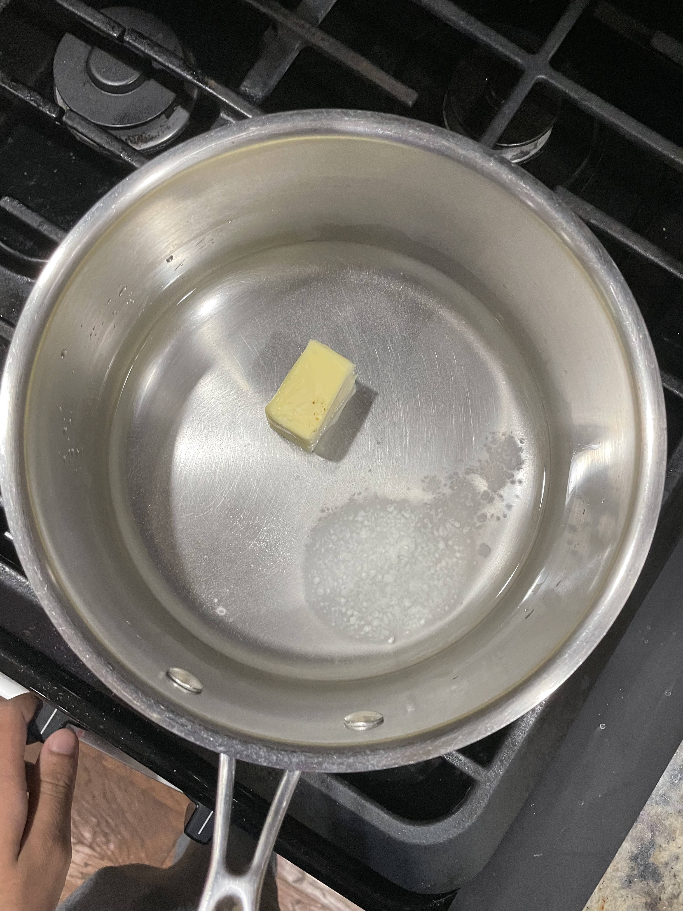
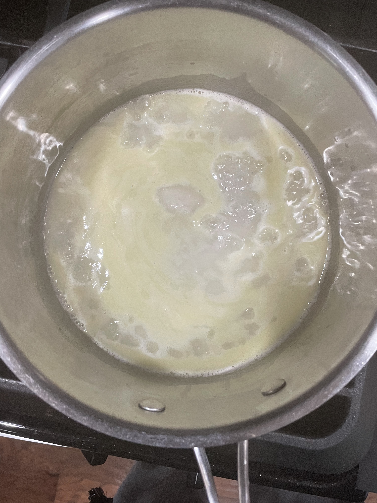
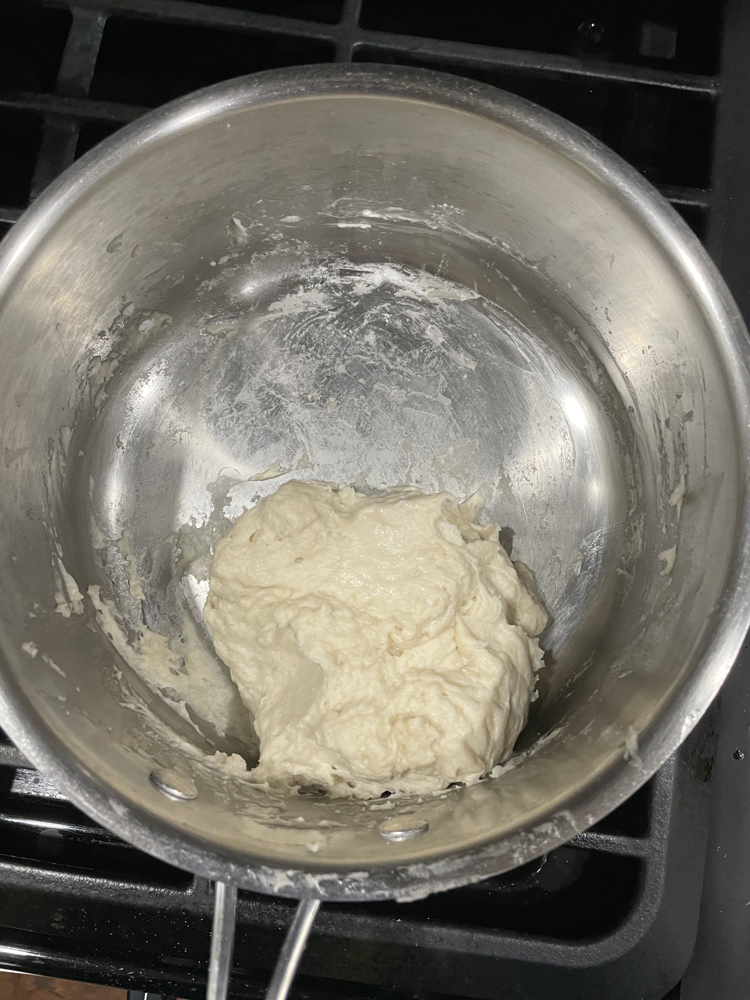
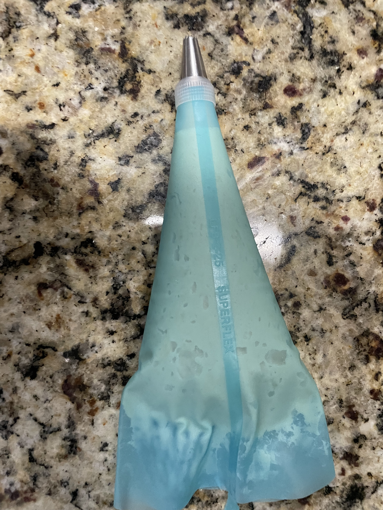
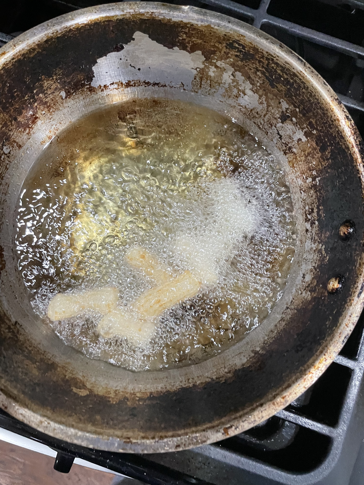
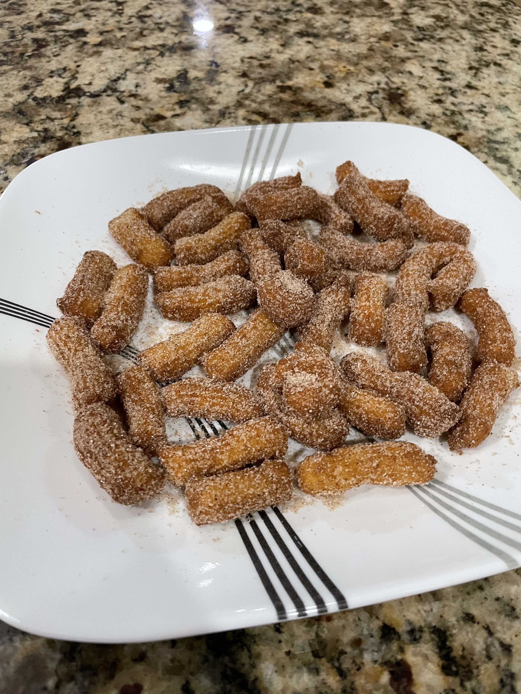

Mini Churros
What are churros?
Churros are a popular Spanish and Portugese dessert made of fried dough, and usually coated in cinnamon sugar. Their long, rigid shape makes them perfectly crispy on the outside with a soft buttery inside. These warm delicacies are best served fresh with a dip such as dulce de leche, chocolate sauce, or anything that seems fitting to you. My mini churros are eggless and consist of just a few simple household ingredients, fried to perfection with the perfect cruch for a satisfactory treat.
Ingredients:
- 1 cup flour
- A pinch of Salt
- 1/4 tsp Baking Soda
- 1 cup water
- 1 tbsp sugar for batter
- 1 tsp vanilla extract or to taste
- 2 tbsp butter or neutral oil
- 2 cups vegetable or canola oil for frying
- 1/2 cup granulated sugar for dusting
- 1 tsp cinnamon or to taste
- Optional dipping sauce chocolate, strawberry, or glaze
Recipe
- In a shallow bowl mix together the granulated sugar and cinnamon
- In a saucepan, melt and whisk the butter, salt, sugar for the batter, and one cup water  
- Let the mixture cool and add vanilla extract to taste
- Add flour and baking soda and mix until smooth batter is formed 
- Put the batter into a piping bag with a decently large tip 
- Heat the oil at a medium heat and pipe in desired churro length, using scissors to seperate from piping bag 
- Fry until deep golden brown and take out onto paper towel lined dish to absorb excess oil
- Toss in cinnamon sugar and enjoy! 